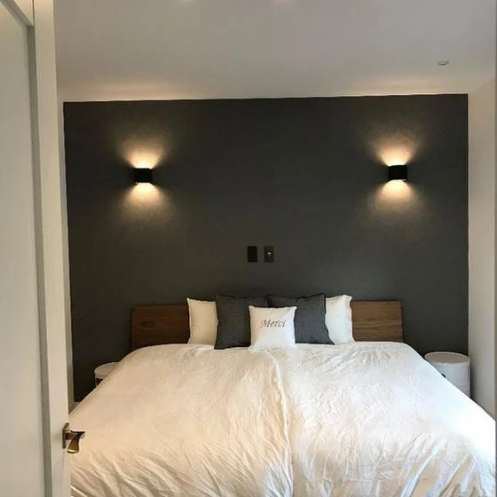
ベッドルームのプチ模様替え
こんにちは。 富山県で自然素材の家づくりをしている 「フジ創アイノス」です。 今日は、ベッドルームのプチ模様替えというテーマです。 ベッドルームは、大切ですよね❔ 模様替えしたくなります。 １．ベッドルーム・寝室プチ模様
続きを読む →FUJISOU AINOS JOURNAL
家づくりのこと、暮らしのこと。
日々の想いを、お伝えします。
社長ブログ 283件 ／ 新しい記事から 7・12ページ

こんにちは。 富山県で自然素材の家づくりをしている 「フジ創アイノス」です。 今日は、ベッドルームのプチ模様替えというテーマです。 ベッドルームは、大切ですよね❔ 模様替えしたくなります。 １．ベッドルーム・寝室プチ模様
続きを読む →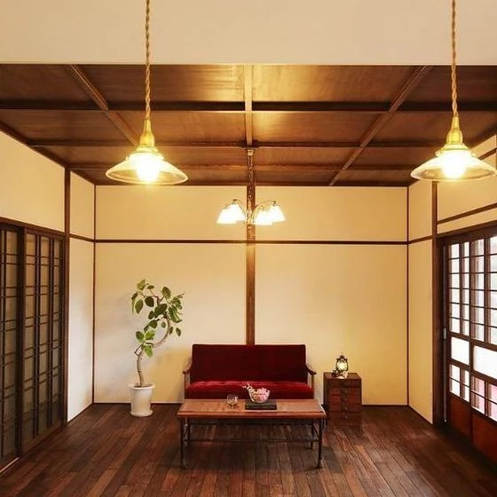
こんにちは 富山県で自然素材の家づくりをしている 「フジ創アイノス」です。 いつもお世話になっております。 今日は、和風が好きな方のために「和モダン」というのをご紹介いたします。 １，木目調のソファやキャビネットを活用
続きを読む →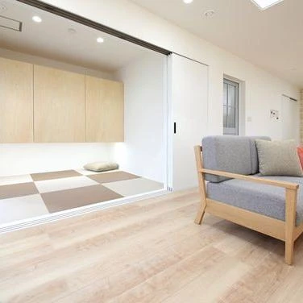
こんにちは。 富山県で自然素材の家づくりをしている 「フジ創アイノス」です。 いつもお世話になっております。 和室について記事をご紹介いたします。 １，間取り 和室がない部屋でも、置き畳で和室に変身 ・全室フローリングと
続きを読む →こんにちは。 富山県で自然素材の家づくりをしている 「フジ創アイノス」です。 今日も、今回の続きで、一戸建て中古住宅見学第二弾。 行ってきた感想を書いていきたいと思います。 今回は、、 富山県高岡市米島の一戸建て中古住宅
続きを読む →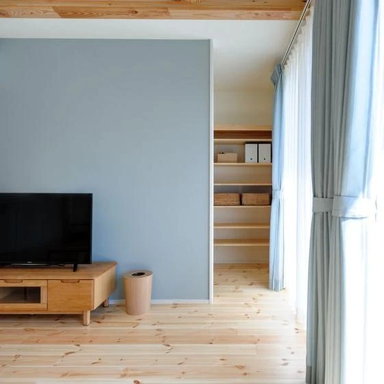
こんにちは。 富山県で自然素材の家づくりをしている 「フジ創アイノス」です。 シンプル収納について、３つのコツをご紹介いたします。 １，シンプルな節電冷蔵庫は(透明)素材 消費電力を抑えた使いやすい冷蔵庫をつくるには、
続きを読む →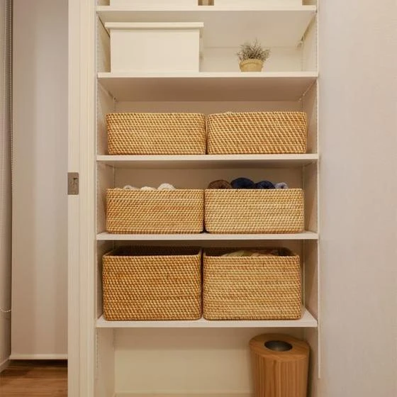
こんにちは。 富山県で自然素材の家づくりをしている 「フジ創アイノス」です。 いつもお世話になっております。 今日は女子向けの記事です。 タイトル、女子向けアイテム収納についてご紹介いたします。 １，こまごまアイテム収納
続きを読む →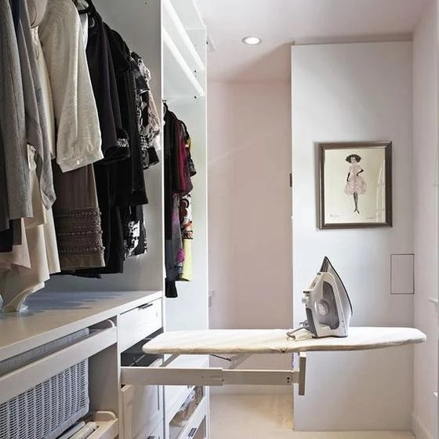
こんにちは。 富山県で自然素材の家づくりをしている 「フジ創アイノス」です。 いつもお世話になっております。 いよいよ、春に近づいてきていますね。 洋服整理とかしたくなりますね^_^ ここで、おしゃれな洋服収納アイデアを
続きを読む →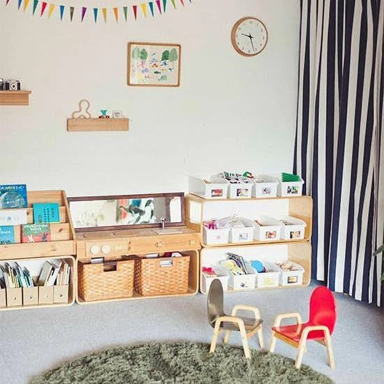
こんにちは。 富山県で自然素材の家づくりをしている 「フジ創アイノス」です。 いつもお世話になっております。 今日は、お子さんがおられる方必見。 おもちゃのきれいに片付けできる方法。 ご紹介いたします。 １，おもちゃは最
続きを読む →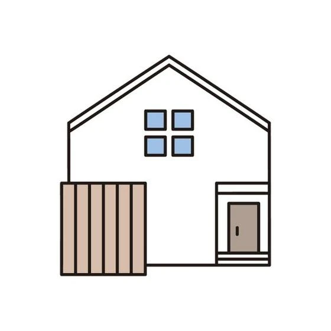
こんにちは。 富山県で自然素材の家づくりをしている 「フジ創アイノス」です。 いつもお世話になっております。 今日は、一戸建て中古住宅見学へ行ってみて思ったことを書いていきたいと思います。 2023年2月に行った物件の感
続きを読む →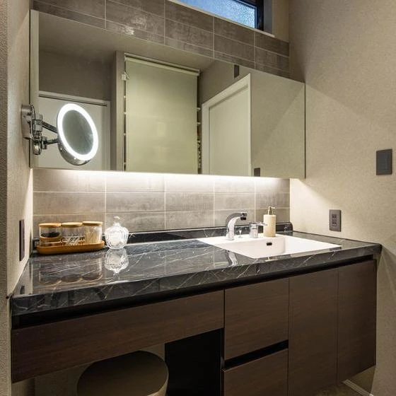
こんにちは 富山県で自然素材の家づくりをしている 「フジ創アイノス」です。 いつもお世話になっております。 今日は、リフォーム前に知っておきたい。 使い勝手の良い洗面台についてご紹介いたします。 １，洗面台の高さを検討。
続きを読む →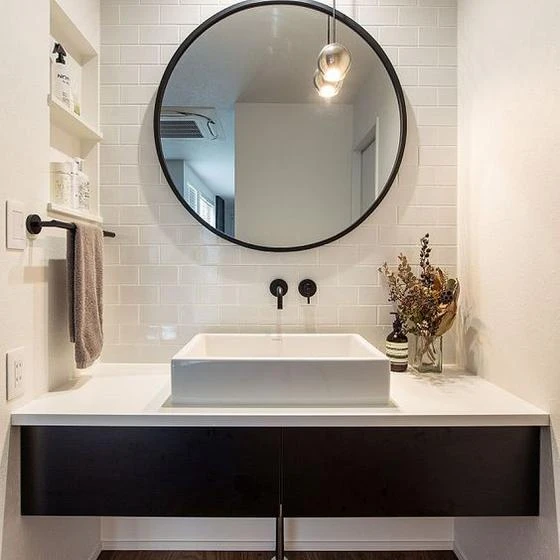
こんにちは 富山県で自然素材の家づくりをしている 「フジ創アイノス」です。 いつもお世話になっております。 今日は、おしゃれにしたい人必見^_^ おしゃれな洗面台のポイントをご紹介いたします。 １，モノトーンのタイルで洗
続きを読む →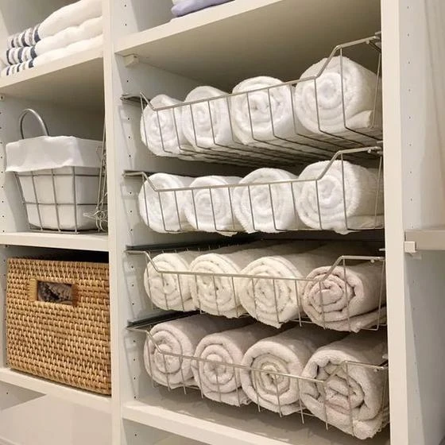
こんにちは。 富山県で自然素材の家づくりをしている 「フジ創アイノス」です。 いつもお世話になっております。 お風呂収納困ってる方おられませんか？ そういう時のために収納をご紹介いたします。 １，お風呂収納で重視すべき点
続きを読む →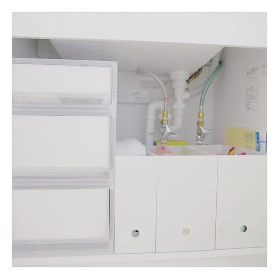
こんにちは 富山県で自然素材の家づくりをしている 「フジ創アイノス」です。 今日は、洗面台の下「流し下」収納について ご紹介いたします。 流し下に収納があると便利ですね。 いくつか収納のことを記事にしていきます。 １．高
続きを読む →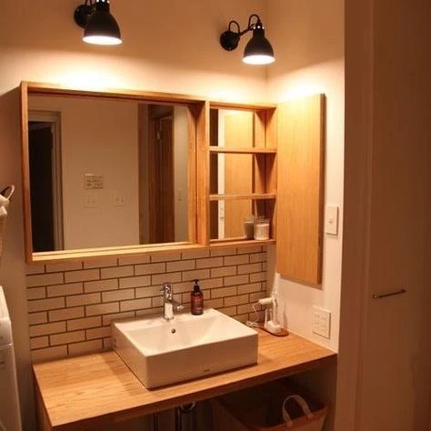
こんにちは 富山県で自然素材の家づくりをしている 「フジ創アイノス」です。 今日は、オリジナル洗面台というお題で更新いたします。 使いやすい、おしゃれ。オリジナル洗面台の作り方をご紹介いたします。 １，カウンタータイプで
続きを読む →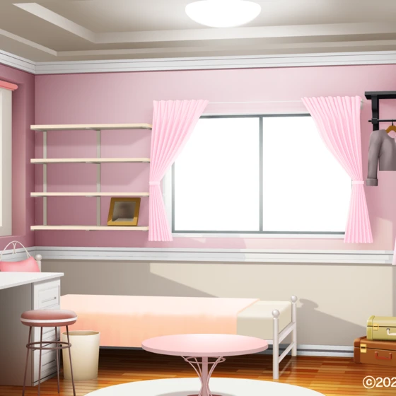
こんにちは。 富山県で自然素材の家づくりをしている 「フジ創アイノス」です。 インテリア関係の記事をご紹介いたします。 おしゃれな誰もが素敵と言われるお部屋憧れますね^_^ リフォームには金額が、、。という方におすすめで
続きを読む →こんにちは。 富山県で自然素材の家づくりをしている 「フジ創アイノス」です。 今日は前回の続きをご紹介いたします。 断熱材の種類2です、 １，天然素材系の断熱材メリットとデメリット ① 羊毛 ウールブレス 体に優しい防虫
続きを読む →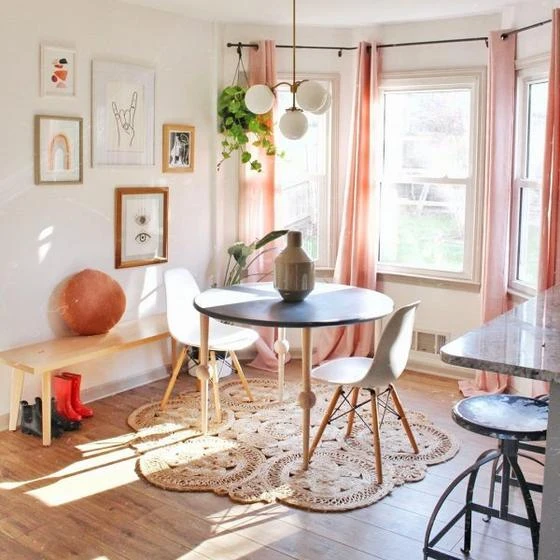
こんにちは。 富山県で自然素材の家づくりをしている 「フジ創アイノス」です。 みんなの憧れ海外インテリアについて。 北欧風なインテリアのお部屋が1番おしゃれ。 みんなと違う部屋が一番いいですね。 ①シンプル＋ナチュラル
続きを読む →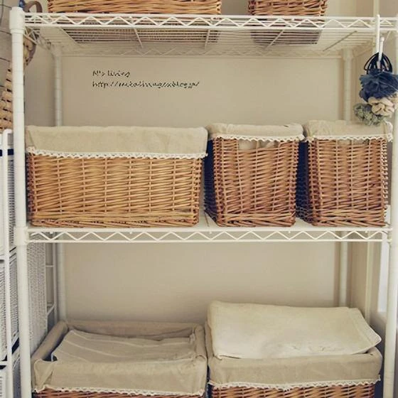
こんにちは 富山で自然素材の家づくりをしている 「フジ創アイノス」です。 今日は、タオル収納についてご紹介いたします。 洗面所のタオル収納に一段と困ることありますよね。。。 きれいに収納したいと思い片付けしてたら、めんど
続きを読む →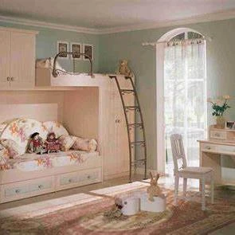
こんにちは。 富山県で自然素材の家づくりをしている 「フジ創アイノス」です。 いつもお世話になっております。 突然ですが、子供部屋をもっとおしゃれにしたいと思ったことありますか？ 中には、普通と違う部屋にしたいと思う方が
続きを読む →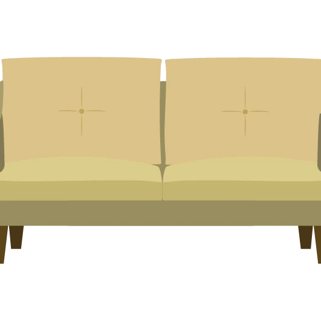
こんにちは。 富山県で自然素材の家づくりをしている 「フジ創アイノス」です。 便利なソファ＋ベッドをご紹介いたします。 おしゃれ感覚がでるソファベッド、、カラーも選べてとても素敵なものがいっぱい。 おしゃれもありますが、
続きを読む →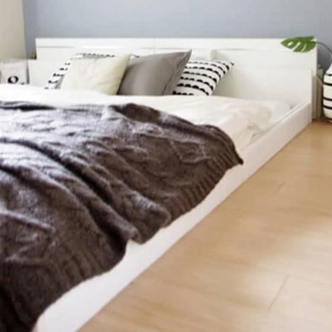
こんにちは。 富山県で自然素材の家づくりをしている 「フジ創アイノス」です。 おしゃれなベッド収納スペースが欲しいという方に アイデアを少し教えいたします。 １，キャスター付きを使った収納。 。バスケットを使う きれいめ
続きを読む →こんにちは。 富山県で自然素材の家づくりをしています 「フジ創アイノス」です。 今日は、ペットに関しての続きをご紹介していきます。 ペット用リフォーム費用について、、 １， ドア・建具のリフォーム費用 ・網戸のネットには
続きを読む →こんにちは。 富山県で自然素材の家づくりを提供している 「フジ創アイノス」です。 今日は、ペットのためのリフォーム(リノベーション)についてです。。 １，目的別 ペットと暮らす家のリフォーム(おすすめ)方法 ・ 壁、消臭
続きを読む →こんにちは 富山県で自然素材にこだわった家づくりをしている 「フジ創アイノス」です。 今日は、費用相場について再度更新いたします。 ・工事でかかる費用 ① 材料費 ② 施工費(人件費) ③ その他(経費) ３つかかります
続きを読む →